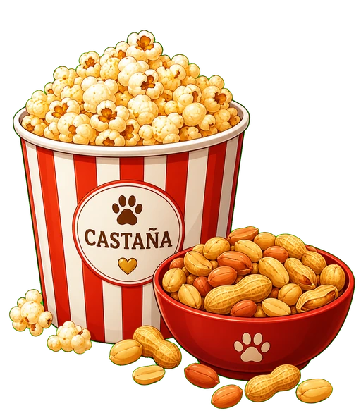

Identidad digital para mascotas
Castaña
Protectora oficial de la casa
Dicen que soy una perrita tranquila... hasta que escucho un ruido sospechoso en la puerta.
Encontré a CastañaPerfil Dogué
Su expediente
- Especie
- Perrita
- Raza
- Perro caramelo, representación canina emblemática reconocida simbólicamente por PROPAEM en el Estado de México
- Historia
- En casa desde 2020
- Peso
- 18 kg
- Color
- Café castaño
- Microchip
- Por confirmar
Salud y vacunas
- ? Múltiple caninaPor confirmar
- ? RabiaPor confirmar
- ? BordetellaPor confirmar
- ? DesparasitaciónPor confirmar
En caso de extravío
Ayúdame a volver a casa
Si encontraste a Castaña, por favor avisa a su familia para que pueda volver a su reino.
Avisar por WhatsApp
Recordatorios veterinarios activos
Su familia puede recibir recordatorios privados por Telegram para vacunas, cuidados y visitas veterinarias.